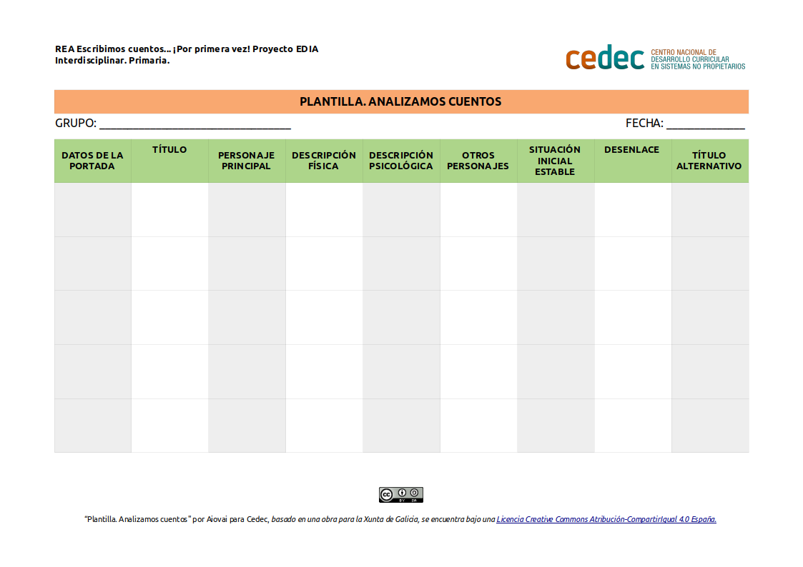

Lectura y análisis de cuentos
El inicio será la familiarización del alumnado de ATAL con cuentos. Esto implica presentar los personajes, localizar el espacio y el tiempo, estructura, conectores, etc.
ACTIVIDAD: Lectura y análisis de cuentos
- Duración:
- 60 a 120 min
- Agrupamiento:
- Gran grupo
Previamente, se realizará una serie de lecturas de cuentos. Las lecturas serán una combinación de lectura por parte de la persona docente, ejerciendo de modelo de persona lectora competente, y lectura libre por parte del alumnado. De los textos empleados para esas lecturas seleccionaremos cuatro para iniciar su análisis.
- Tabla de recogida de datos
- En grupo, analizamos los cuentos leídos y cubrimos el modelo propuesto para la recogida de datos. Para ello realizamos una tabla de doble entrada con nueve columnas para, reflexionar y recoger los siguientes aspectos:
- Datos de portada (persona autora, persona ilustradora, editorial,...)
- Título
- Personaje principal
- Descripción física
- Descripción psicológica
- Otros personajes
- Situación inicial estable
- Desenlace
- Título alternativo
- Modelo de tabla
-
- Modelo de plantilla para analizar cuentos (descargar en formato editable odt y en pdf).

Es posible su adaptación previa por parte de la persona docente con el software LibreOffice Writer. Como alternativa podemos elaborar un mural con una tabla en la que se van recogiendo los datos.
Dos minutos para pensar
Nuestro "Diario de reflexiones" será la herramienta para revisar nuestro trabajo durante la secuencia didáctica. Podremos escribirlo en nuestro cuaderno de clase, en un documento de Google Drive, o en un documento de texto que guardemos en nuestro ordenador.
Al terminar cada parte de esta secuencia abriremos una entrada nueva, le pondremos un título y anotaremos nuestras reflexiones.
Al tratarse de alumnado de ATAL de 2º ciclo de educación primaria realizaremos una puesta en común que registraremos con ellos.

Empezamos ahora con la primera entrada de nuestro diario de clase con el título "Analizamos cuentos".
Hemos analizado varios cuentos para saber como están escritos, quiénes son los personajes, etc. Seguramente algunas características ya las conocíamos pero otras las acabamos de aprender. Podemos contestar juntos a alguna de estas preguntas:
- ¿Te habías detenido alguna vez a analizar un cuento de esta forma?
- ¿Qué parte de la tarea te ha resultado más difícil analizar? ¿y más fácil?
- ¿Te ha gustado esta actividad?
Además de contestar a estas preguntas, podemos anotar en nuestro Diario las dudas que nos surjan o nuestras reflexiones.
Obra publicada con Licencia Creative Commons Reconocimiento Compartir igual 4.0